703308 VO High-Performance Computing
University of Innsbruck
MPI_COMM_WORLD?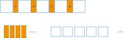
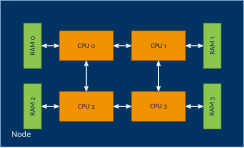
MPI_COMM_WORLD?
MPI_Group
MPI_Comm
MPI_Group
MPI_GroupMPI_Comm_group(…)MPI_Group_union(…)MPI_Group_intersection(…)MPI_Group_difference(…)MPI_Group_incl(…)MPI_Group_excl(…)MPI_Group_range_incl(…)MPI_Group_range_excl(…)MPI_Group_size(…)MPI_Group_rank(…)MPI_Group_compare(…)
MPI_IDENT, MPI_SIMILAR or MPI_UNEQUALMPI_Group_free(…)MPI_CommMPI_Comm_dup(…)MPI_Comm_create(…)MPI_Comm_split(…)MPI_Cart_sub(…)MPI_Comm_size(…)MPI_Comm_rank(…)MPI_Comm_compare(…)
MPI_IDENT, MPI_SIMILAR, MPI_CONGRUENT or MPI_UNEQUALMPI_Comm_free(…)MPI_COMM_WORLDMPI_Group_union(), MPI_Group_range_incl(), …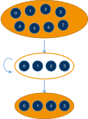
comm: current communicatorcolor: control of subset assignment (same color: same new communicator)key: control of rank assignment (0: sorted as in comm; otherwise according to ascending key values)newcomm: new communicatorMPI_Comm_split_type(…)
MPI_Comm_split examplea communicator per element type:
MPI_COMM_WORLD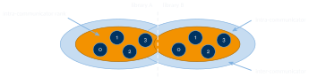
memcpy in the same address space?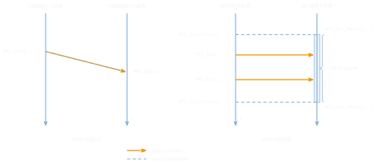
MPI_Win_fence() or “post-start-complete-wait”MPI_Win_lock() and MPI_Win_unlock()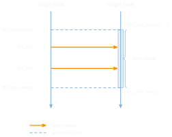
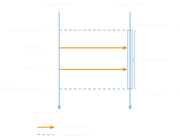
std::mutex, …)
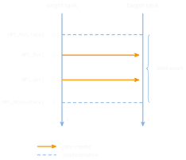
int to rank 1
MPI_Put() calls with MPI_Win_fence() synchronization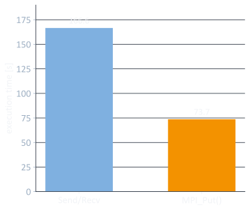
MPI_MODE_NOSTORE
MPI_MODE_NOPUT
MPI_MODE_NOPRECEDE
MPI_MODE_NOSUCCEED
MPI_Win_create(…)
MPI_Win_allocate(…)
MPI_Win_create_dynamic(…)
MPI_Win_attach()/MPI_Win_detach()MPI_Win_allocate_shared(…)
MPI_COMM_TYPE_SHAREDorigin_addr: local address of data to put (aka “send buffer”)origin_count: number of elements on origin sideorigin_datatype: type of elements on origin sidetarget_rank: target ranktarget_disp: offset of target address to base address of target windowtarget_count: number of elements on target sidetarget_datatype: type of elements on target sidewin: window handleMPI_Get(…): transfer data from target to originMPI_Accumulate(…)
MPI_Reduce(…) (e.g. MPI_SUM)MPI_REPLACE to get atomic putMPI_Get_accumulate(…)
MPI_Accumulate(…) but store target buffer data in result buffer before accumulatingMPI_NO_OP to implement atomic get or MPI_REPLACE for atomic swapMPI_Compare_and_swap(…)
MPI_Fetch_and_op(…)
MPI_Get_accumulate(…), available for hardware optimizationMPI_Get_accumulate(…)’s generic functionality
// rank 0 (origin)
MPI_Win window;
int buffer[SIZE] = ... ;
MPI_Win_create(&buffer, sizeof(int)*SIZE,
sizeof(int), MPI_INFO_NULL,
MPI_COMM_WORLD, &window);
MPI_Win_fence(MPI_MODE_NOSTORE |
MPI_MODE_NOPUT | MPI_MODE_NOPRECEDE,
window);
MPI_Put(&buffer, SIZE, MPI_INT, 1, 0,
SIZE, MPI_INT, window);
MPI_Win_fence(MPI_MODE_NOSTORE |
MPI_MODE_NOPUT | MPI_MODE_NOSUCCEED,
window);
MPI_Win_free(&window);// rank 1 (target)
MPI_Win window;
int buffer[SIZE] = { 0 };
MPI_Win_create(&buffer, sizeof(int)*SIZE,
sizeof(int), MPI_INFO_NULL,
MPI_COMM_WORLD, &window);
MPI_Win_fence(MPI_MODE_NOSTORE |
MPI_MODE_NOPRECEDE |
MPI_MODE_NOSUCCEED, window);
// window open, buffer can be written to
MPI_Win_fence(MPI_MODE_NOPUT |
MPI_MODE_NOPRECEDE |
MPI_MODE_NOSUCCEED, window);
// use buffer here
MPI_Win_free(&window);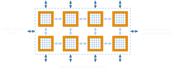
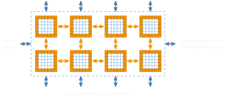
MPI_Comm_split_type(MPI_COMM_WORLD, MPI_COMM_TYPE_SHARED,
0, MPI_INFO_NULL, &comm_sm);
MPI_Win_allocate_shared((MPI_Aint)(sizeof(int) * 10),
sizeof(int), MPI_INFO_NULL, comm_sm,
&rcv_buf_ptr, &win);
MPI_Win_fence(0, win);
*rcv_buf_ptr = ...; // replaces the MPI_Put() call!
MPI_Win_fence(0, win);
MPI_Win_free(&win);std::thread or Pthreads or TBB or …)MPI_THREAD_SINGLE: only a single thread per rankMPI_THREAD_FUNNELED: multithreaded ranks, but only the main thread calls MPIMPI_THREAD_SERIALIZED: multithreaded, but only one per time calls MPIMPI_THREAD_MULTIPLE: multithreaded, any thread can call MPI any time (with restrictions)MPI_THREAD_SINGLE
MPI_Query_thread(…) and call MPI_Init_thread() instead of MPI_Init()MPI_SUCCESS if everything went wellmalloc in sequential programMPI_Comm_set_errhandler(…)
MPI_ERRORS_ARE_FATAL: abort if error detected (default)MPI_ERRORS_RETURN: return error code to user programMPI_Comm_create_errhandler(…)MPI_Comm_set_errhandler(…)MPI_Comm_get_errhandler(…)MPI_... vs. PMPI_...703308 VO High-Performance Computing — MPI groups, communicators & one-sided communication